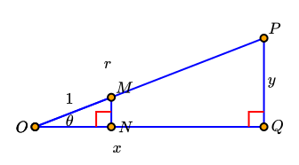

Activity 127. Activity 4.1.2.
Consider right triangle \(OPQ\) given in the figure below, and assume that the length of the hypotenuse is \(OP=r\) for some constant \(r>1\text{.}\) The point \(M\) lies on the line segment between \(O\) and \(P\) in such a way that the length \(OM=1\) , and point \(N\) lies on the line segment between \(O\) and \(Q\) so that the angle \(\angle ONM\) is a right angle, as pictured. In addition, assume that point \(O\) corresponds to \((0,0)\text{,}\) point \(Q\) to \((x,0)\text{,}\) and point \(P\) to \((x,y)\) so that \(OQ=x\) and \(PQ=y\text{.}\) Finally, let \(\theta\) be the measure of angle \(\angle POQ\text{.}\)

(a)
Explain why \(\triangle OPQ\) and \(\triangle OMN\) are similar triangles.
Solution.
One is a magnification of the other. Same angles, one of the sides are some \(k\) times larger than the other.
(b)
What is the value of the ratio \(\frac{OP}{OM}\text{?}\) According to the definition of similar triangles, what does this tell you about the ratios \(\frac{OQ}{ON}\) and \(\frac{PQ}{MN}\text{?}\)
Solution.
\(\dfrac{OP}{OM}=\dfrac{larger-hyp}{smaller-hyp}=\dfrac{r}{1}=r\text{.}\) So the larger triangle is \(r\) times larger than the smaller triangle! So all the rations must be the same since they are similar triangles:
\begin{equation*}
\dfrac{OQ}{ON}=\dfrac{larger-horiz}{smaller-horiz} = \dfrac{r}{1}.
\end{equation*}
\begin{equation*}
\dfrac{PQ}{MN}=\dfrac{larger-vert}{smaller-vert} = \dfrac{r}{1}.
\end{equation*}
(c)
What is the value of \(ON\) in terms of \(\theta\text{?}\) What is the value of \(MN\) in terms of \(\theta\text{?}\) (Think unit circle! Top of page!)
Solution.
Since the hypotenuse is \(1\text{,}\) we can embed this triangle into the unit circle! And the y-coordinate will correspond to the vertical side of the triangle and is given by \(\sin(\theta)\text{.}\) Similarly the x-coordinate on the unit circle will correspond to the horizontal side of the triangle and is given by \(\cos(\theta)\text{.}\)
(d)
Use your conclusions in (b) and (c) to express the values of \(x\) and \(y\) in terms of \(r\) and \(\theta\text{.}\)
Solution.
Since we know all three sides of the smaller triangle, and the larger triangle sides are \(r\) times as larger. So the hypotenuse is \(r * 1\) or just \(r\text{,}\) the vertical side is \(r*\sin(\theta)\) so \(y=r\sin(\theta)\text{,}\) and the horizontal side is \(r*\cos(\theta)\) so \(x=r\cos(\theta)\text{.}\)
This leads us to some cool relationships if we think of \(x\) as the adjacent side (since it is next to the angle \(\theta\)) and we think of \(y\) as the opposite side since it is opposite of \(\theta\) and \(r\) as the hypotenuse (since it is) this leads us to the relationships on the following page.